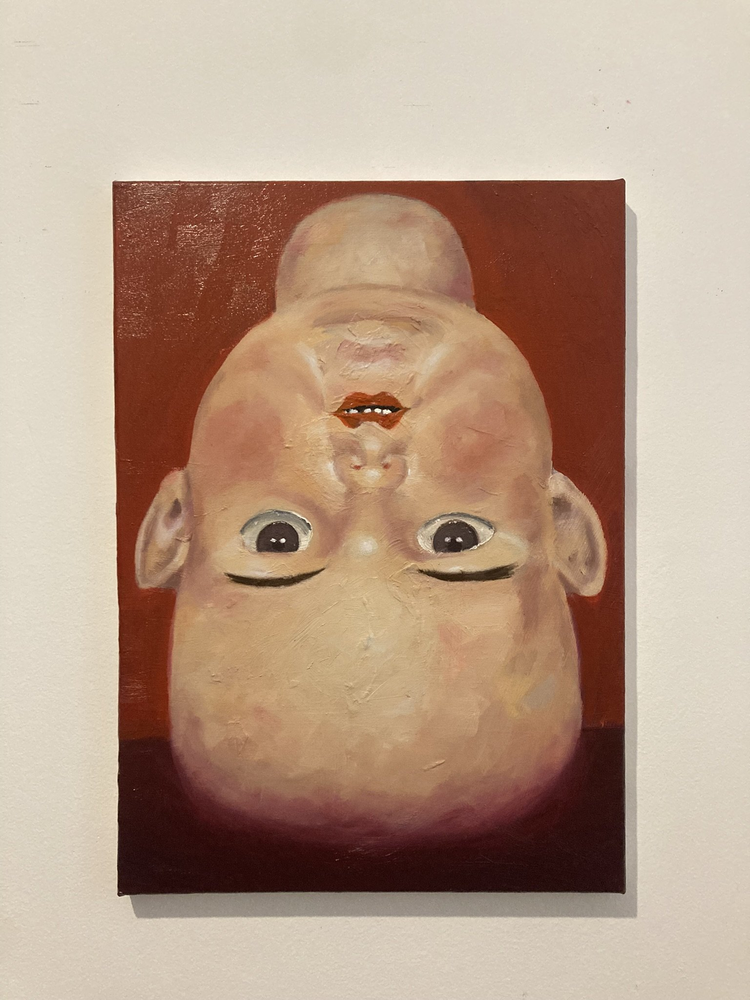
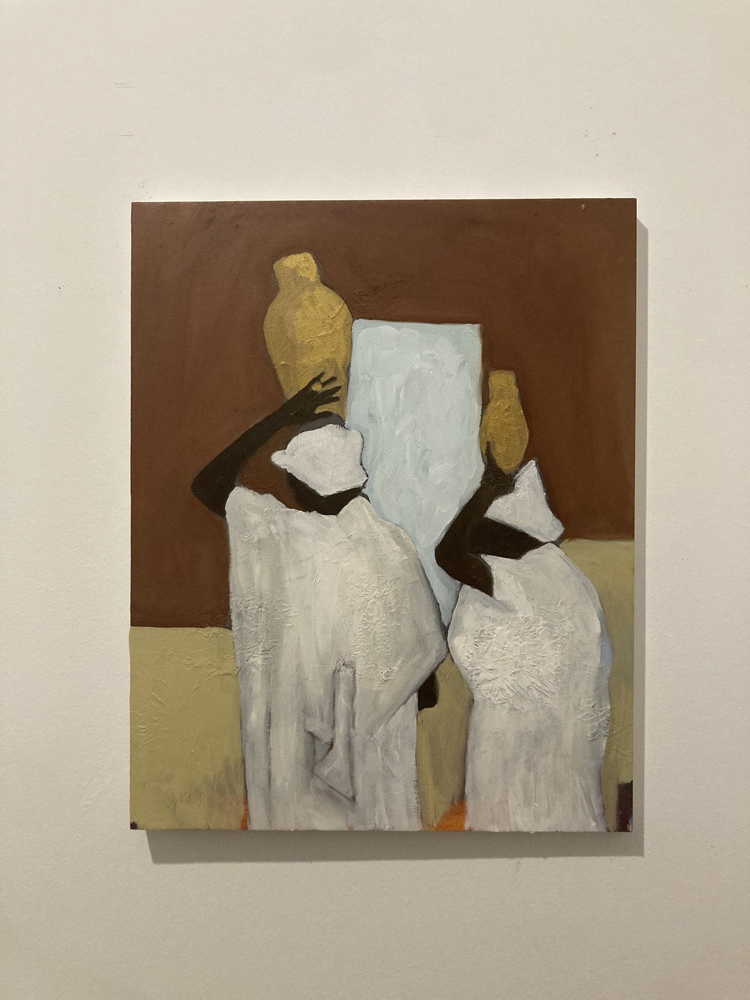
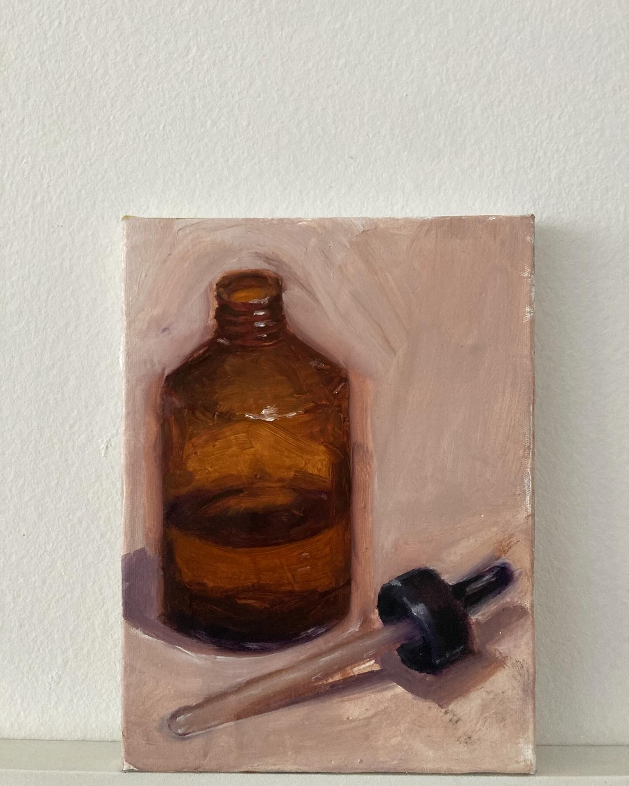
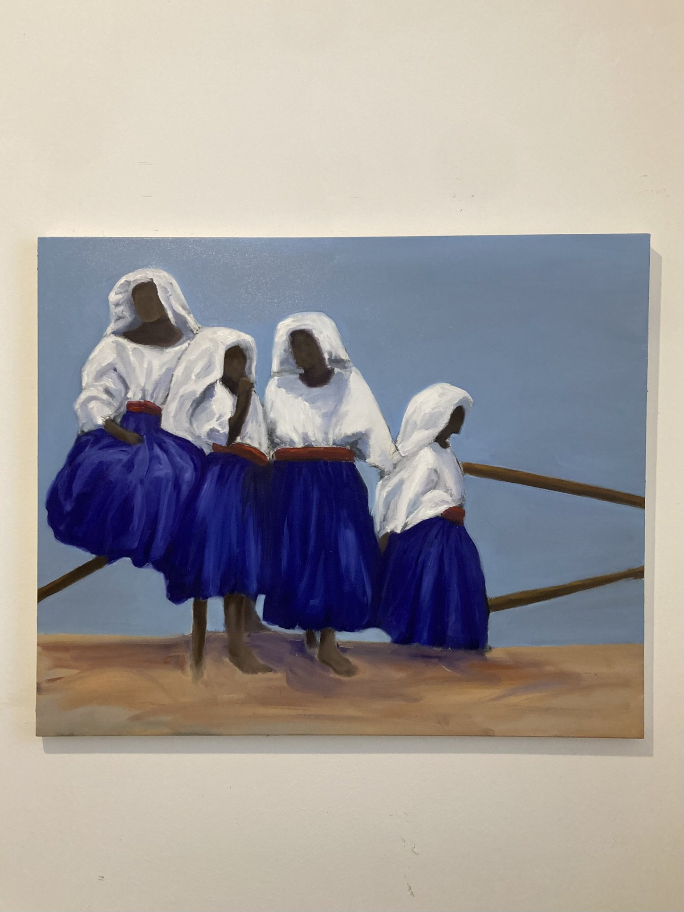
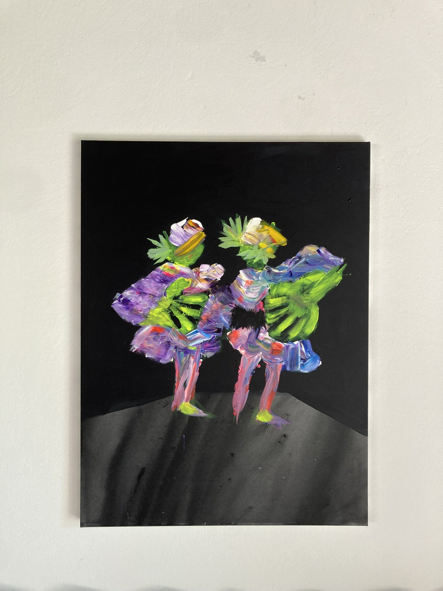
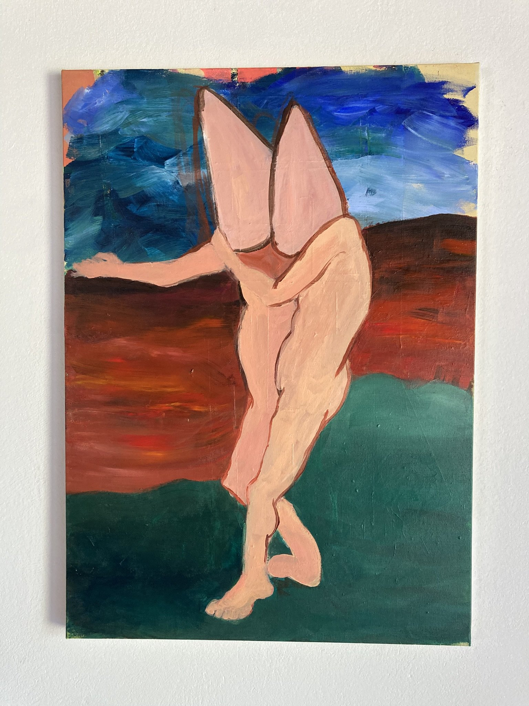
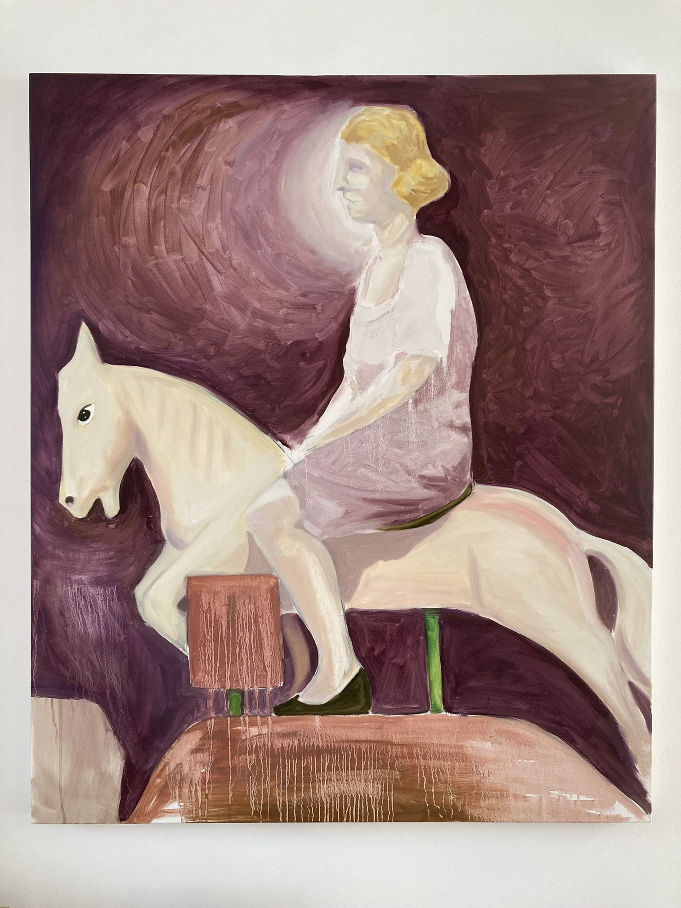
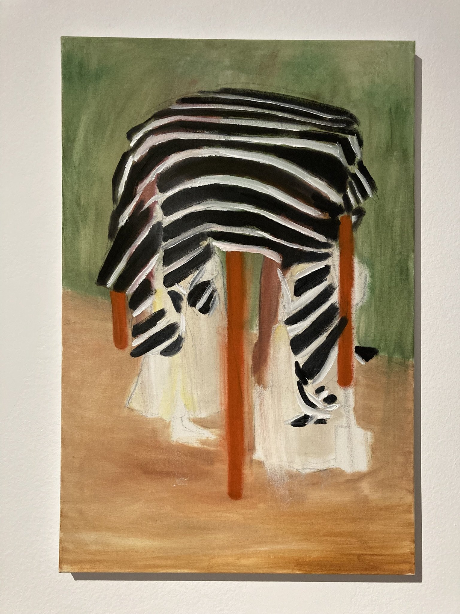
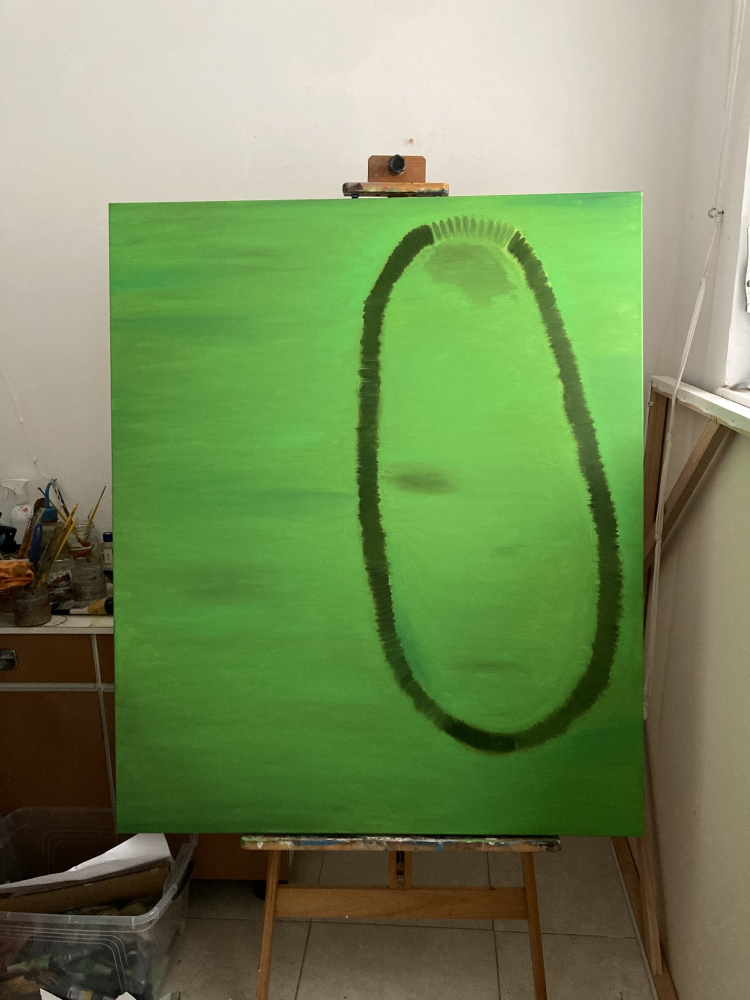

{kind=link}
{kind=link}
{kind=link}
{kind=link}
{kind=link}
{kind=link}
{kind=link}
{kind=link}
{kind=link}
Statement
A prática pictórica investiga o modo como as imagens organizam a experiência histórica, política e sensível. O arquivo aparece menos como documento fechado do que como campo de reaparições.
pintura · imagem · arquivo
Um portfólio em construção: pinturas, textos e imagens que atravessam a formação do olhar, seus fragmentos e seus fantasmas.

Seleção de pinturas recentes. Clique nas imagens para ampliar.








Ensaios, notas de processo e textos curatoriais.
A prática pictórica investiga o modo como as imagens organizam a experiência histórica, política e sensível. O arquivo aparece menos como documento fechado do que como campo de reaparições.
Fragmentos, ícones, dispositivos de poder e imagens fundacionais atravessam a pintura como ruídos de uma memória que insiste em permanecer visível.
Espaço reservado para textos críticos, apresentações de exposição e acompanhamentos curatoriais.
Biografia curta e currículo selecionado.
lima.studio reúne uma produção em pintura voltada à investigação das imagens, dos arquivos e das formas de poder que atravessam a experiência brasileira.
Substitua este trecho por uma biografia de 5 a 8 linhas, com formação, cidade de atuação, exposições, residências, coleções e pesquisas recentes.
Para conversas, visitas de ateliê, textos e aquisição de obras.
Entre em contato para solicitar portfólio completo, lista de obras disponíveis ou agendar uma conversa.